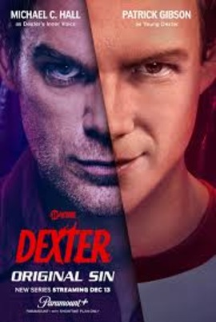

1.
Season 11 - Dexter: Resurrection (2025)
Dexter: Resurrection Season 1 is the best season of the Dexter franchise, also being the most recent.

2.
Season 2 (2007)
Season 2 is the best season of the original Dexter series.

3.
Season 4 (2009)
Season 4 has the best serial killer villain, and the ending was the most heartwrenching.

4.
Season 1 (2006)
The classic season that started it all. This had the best vibes, and kept you curious on who the ice truck killer.
5.
Season 7 (2012)
Season 7's main "villain" had you sympathize for him and he was a great character. LaGuerta vs Dexter was also a good storyline.

6.
Season 3 (2008)
This season's villain was good but felt rushed towards the end, but it was interesting to see Dexter team up with another.

7.
Season 9 - Dexter: New Blood (2021-22)
This revival was ok but their attempt to end the Dexter Franchise for good was a complete mess that Resurrection had to be made.

8.
Season 10 - Dexter: Original Sin (2024-25)
This prequel series was ok in highlighting Dexter's past, but it wasn't really entertaining.

9.
Season 5 (2010)
This season started Dexter's downfall (the show and the character), and the main antagonist wasn't that entertaining. Lumen could've been more interesting.
10.
Season 6 (2011)
The serial killer for this season just wasn't entertaining to watch, and there were a few plot holes and conveniences.
11.
Season 8 (2013)
This season was unbearable to watch, it was annoying how one of the main character dies for no reason and doesn't get their happy ending after Season 7 happened.